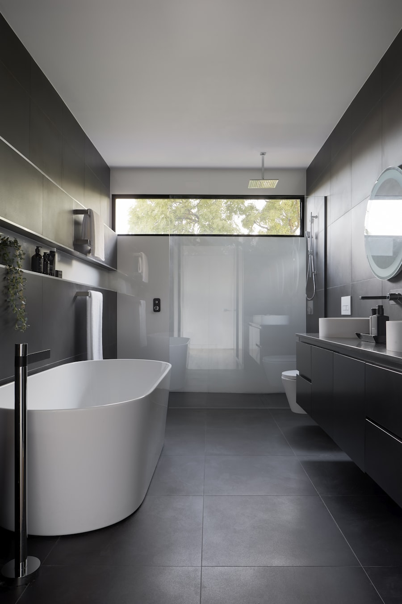

Assistance administrative · 100 % français · Algarve
Aide aux démarches administratives en Algarve, en français
Vous vivez déjà en Algarve ou vous préparez votre installation ? Je m'occupe de vos démarches en français — NIF, CRUE, banque, SNS et plus encore.

Vivre en Algarve sans parler portugais : les vrais blocages
La barrière de la langue
Formulaires, sites et accueils souvent en portugais : un simple rendez-vous peut devenir un casse-tête.
Des dossiers exigeants
Une pièce manquante ou mal présentée repousse tout : fatigue et impression d'être bloqué.
Tout arrive en même temps
NIF, banque, santé, logement : l'accumulation épuise, surtout quand on découvre le pays.
Mes services d'assistance administrative en Algarve
Assistance et accompagnement aux démarches : je ne remplace pas un avocat ni un comptable, mais je peux simplifier votre quotidien administratif en Algarve.
NIF
Dossier, rendez-vous et accompagnement pour votre numéro fiscal portugais.
Obtenir mon NIF au PortugalCRUE
Inscription communale : formulaires et présence à la Câmara si besoin.
Demander mon CRUE PortugalCompte bancaire
Préparation du dossier et présence le jour du rendez-vous en agence.
Ouvrir un compte bancaire au PortugalSNS (santé)
Accompagnement au Centro de Saúde et aide sur les formulaires.
M'inscrire au SNS au PortugalCertificat de vie
Coordination pour la signature et l'envoi selon votre caisse.
Faire mon certificat de vie au PortugalImmatriculation
Dossier véhicule et étapes auprès des organismes compétents.
Immatriculer mon véhicule au PortugalPack installation complète
Un seul interlocuteur francophone pour coordonner vos démarches d'arrivée.
Voir le pack installation en AlgarveVue d'ensemble des services d'assistance administrative · Tarifs
Pourquoi choisir un accompagnement francophone en Algarve
Un service pensé pour les Français en Algarve, sans mauvaise surprise.
Francophone natif
Je parle français comme vous. Pas de Google Translate, pas de phrases approximatives — vous expliquez votre situation comme à un voisin, en confiance.
Prix fixes annoncés avant
Le tarif est connu avant le démarrage. Pas de facturation à l'heure qui s'allonge, pas de "surprise" à la fin. Vous savez ce que vous payez et pour quoi.
Premier échange 100% gratuit
Avant tout engagement, on prend 15 à 20 minutes pour comprendre votre situation. Si je peux vous aider, je vous le dis. Si je ne suis pas la bonne personne, je vous le dis aussi.
Sans engagement, sans abonnement
Vous me sollicitez quand vous en avez besoin, prestation par prestation. Aucun contrat à durée indéterminée, aucun paiement récurrent imposé.
À qui s'adresse mon accompagnement en Algarve
Encore en France
Vous préparez votre installation et voulez avancer sur le dossier avant le grand départ — sans tout faire seul.
Vous venez d'arriver
Logement, banque, santé : tout s'empile. Vous voulez une liste claire et quelqu'un qui parle français au bon moment.

Déjà installé
Une démarche bloque ou un courrier incompris ? Vous cherchez de l'aide ponctuelle, sans jargon.
J'interviens à Lagos, Albufeira, Faro, Tavira, Portimão et dans toute la région de l'Algarve — que vous soyez dans l'une de ces villes ou ailleurs en Algarve.
Lagos · Albufeira · Faro · Tavira · Portimão · Toute l'Algarve
Avis de Français accompagnés en Algarve
Retours de clients (prénoms modifiés).
« On avait peur de la paperasse avant notre arrivée. Le premier échange nous a rassurés, et les étapes se sont enchaînées sans stress. »
— Marie & Jean, Algarve · pack installation
« Pour le NIF et la banque, j'avais besoin qu'on m'explique simplement. C'était clair, patient, et en français. »
— Philippe, Algarve · NIF et banque
« Un courrier du SNS que je ne comprenais pas : explications et traduction informelle. J'ai su quoi faire. »
— Sophie, Algarve · santé / SNS
Premier échange gratuit pour vos démarches en Algarve
Dites-moi où vous en êtes : je vous réponds sous 24h, sans engagement. Mes prestations sont à tarif fixe annoncé avant chaque mission, à partir de 49€.
Parlons-en →Une question rapide ? Réponse en 24h.
Dites-moi en une phrase où vous en êtes. Je vous réponds personnellement, en français, sans engagement.
Questions fréquentes sur l'aide aux démarches en Algarve
Faut-il parler portugais pour faire ses démarches en Algarve ?
Ce n'est pas obligatoire, mais sans accompagnement c'est souvent décourageant. Je peux vous aider à préparer,
Combien coûte votre service ?
Chaque prestation est à prix fixe sur la page consulter les tarifs. Le premier contact est gratuit.
Pouvez-vous m'aider depuis la France avant mon arrivée ?
Oui pour plusieurs étapes (notamment le NIF dans de nombreux cas). On définit ensemble ce qui est faisable à distance.
Êtes-vous avocat ou comptable ?
Non. J'assiste sur l'administratif : formulaires, rendez-vous, coordination. Pour le reste, orientation vers un professionnel adapté.
Où intervenez-vous en Algarve ?
J'interviens à Lagos, Albufeira, Faro, Tavira, Portimão et dans toute la région de l'Algarve.
Comment se passe un accompagnement, étape par étape
Une méthode claire, pas de jargon, des étapes prévisibles.
Diagnostic
On commence par un échange gratuit pour comprendre où vous en êtes : quels documents vous avez, quelles démarches vous bloquent, quels délais vous tiennent. À l'issue, je vous dis franchement ce que je peux faire — et ce que je ne peux pas.
Plan d'action
Je vous prépare une feuille de route claire : la liste des pièces à rassembler, les rendez-vous à prévoir, l'ordre des démarches. Vous savez quoi faire, dans quel ordre, et pourquoi.
Accompagnement
Je suis à vos côtés sur le terrain : préparation de dossiers, présence aux rendez-vous quand c'est utile, traduction informelle, suivi jusqu'à la finalisation. Vous n'êtes plus seul face à l'administration portugaise.